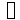
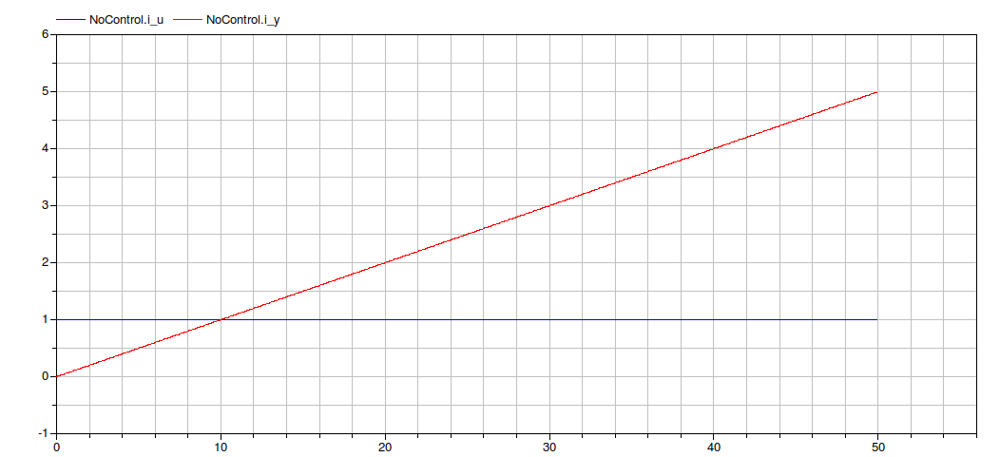
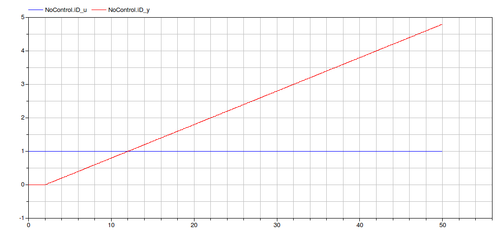
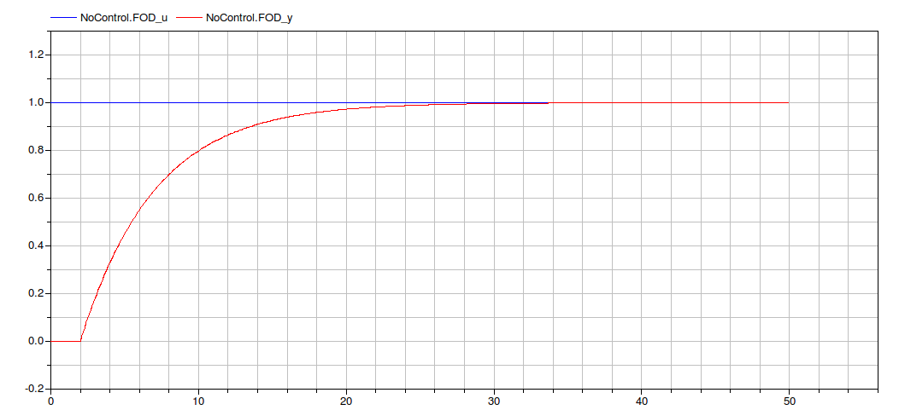
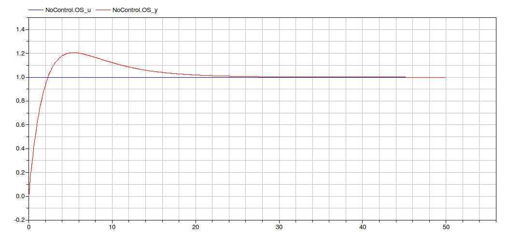
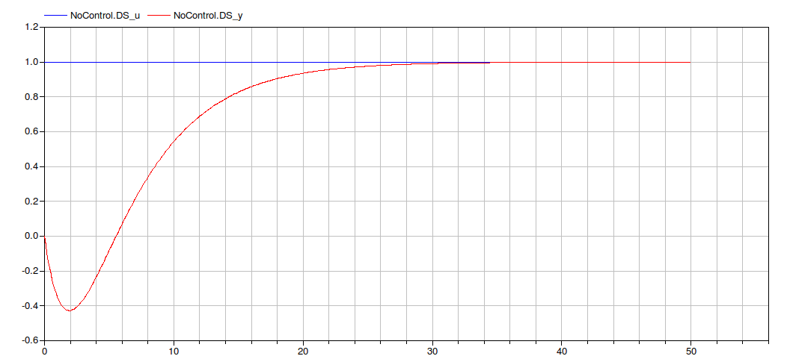
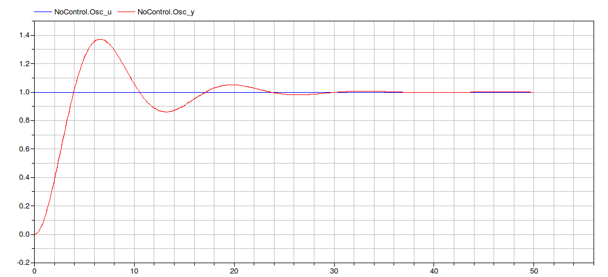

Typical transfer functions
Information
Description
This sub-package contain a list of trasfer functions that represent a variety of industrial processes.
Extends from Modelica.Icons.Package (Icon for standard packages).
Package Content
| Name | Description |
|---|
|  TypicalTF
| This model contains a set of typical process transfer functions |
This model contains a set of typical process transfer functions
Information
Description
This model is a container of different trasfer functions that can model the typical processes.
The parameters of each TF (listed in a table below), can be modified in order to adapt each process to the user's needs.
| Integrator |
|---|
Y(s) 1
---- = -----
U(s) 5s
|

| Integrator + delay |
|---|
Y(s) 1 -2s
---- = ----- e
U(s) 5s
|

| First Order |
|---|
Y(s) 1
---- = --------
U(s) 1 + 5s
|

| First Order + delay |
|---|
Y(s) 1 -2s
---- = -------- e
U(s) 1 + 5s
|

| Fast Slow |
|---|
Y(s) 1 + 5.8s
---- = --------------
U(s) (1 + 6s)(1+s)
|

| Overshooting |
|---|
Y(s) 1 + 8s
---- = ---------------
U(s) (1 + 5s)(1+2s)
|

| Undershooting |
|---|
Y(s) 1 - 5.5s
---- = ---------------
U(s) (1 + 5s)(1+2s)
|

| Complex Poles |
|---|
Y(s) 1
---- = --------------------
U(s) 1 + 1.2 s + 0.025s
|

Parameters
| Name | Description |
|---|
| First Order |
| mu_FO | Gain |
| T_FO | Time constant |
| First Order + Delay |
| mu_FOD | Gain |
| T_FOD | Time constant |
| delay_FOD | Time delay |
| Integrator |
| mu_i | Gain |
| Integrator + Delay |
| mu_iD | Gain |
| delay_iD | Time delay |
| OverShooting system |
| mu_OS | Gain |
| Tau_OS | Zero's time constant |
| T1_OS | Dominant pole time constant |
| T2_OS | Second pole time constant |
| UnderShooting system |
| mu_US | Gain |
| Tau_US | Zero's time constant |
| T1_US | Dominant pole time constant |
| T2_US | Second pole time constant |
| Complex poles |
| mu | Gain |
| xi | Damping coefficient |
| omega | Natural frequency |
| Fast-Slow system |
| mu_FS | Gain |
| Tau_FS | Zero's time constant |
| T1_FS | Dominant pole time constant |
| T2_FS | Second pole time constant |
Connectors
| Name | Description |
|---|
| FO_u | First Order input |
| FO_y | First Order output |
| FOD_u | First Order+ Delay input |
| FOD_y | First Order + Delay output |
| i_u | Integrator input |
| i_y | Integrator output |
| iD_u | Integrator + Delay input |
| iD_y | Integrator + Delay output |
| OS_u | OverShooting input |
| OS_y | OverShooting output |
| US_u | UnderShooting input |
| US_y | UnderShooting output |
| Osc_u | Complex Poles input |
| Osc_y | Complex Poles output |
| FS_u | Fast Slow input |
| FS_y | Fast Slow output |
Automatically generated Mon May 21 13:34:16 2012.